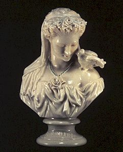

LESBIA
| Lesbia
non è il vero nome dell'amata di Catullo ma è il dolce soprannome
che dona a Clodia, una delle tre sorelle del tribuno Clodio, grande nemico
di Cicerone. Questo soprannome deriva dall'isola di Lesbo, nella quale era
nata la poetessa Saffo,per questo motivo il nome Lesbia è un omaggio
pieno di stima del poeta. Clodia apparteneva quindi alla nobiltà,
era vedova di Quinto Cecilio Metello e fonti dicono che il suo modo libertino
di vivere era criticato da molti personaggi romani. Clodia era accusata di
adulterio e addirittura di incesto con il fratello, queste fonti ci arrivano
da un' arringa giudiziaria di Cicerone in difesa di
Celio Rufo (31 e segg), accusato di tentato omicidio
da Clodia. Nella suo discorso Cicerone la accusa di cattivi costumi e di
non seguire il modello di comportamento della
Matrona Romana.
Per avere un'idea precisa dell'amore che Catullo provava per Lesbia bisogna tener presente di come fosse vissuto l'amore nel periodo romano. Nel matrimonio non vi era amore ma era soltanto un contratto tra due famiglie, quindi le relazioni cantate nella poesia lirica Romana erano esterne al matrimonio dedicata il più delle volte a liberte o prostitute. Anche l'adulterio era esaltato nelle poesie d'amore, anche se le protagoniste erano donne di ceto basso. L' amore di Catullo per Clodia non sarebbe mai sfociato in un matrimonio, anche perché la differenza di età tra i due era di ben dieci anni.Il sentimento di Catullo per Clodia era reale e passionale, condannato però a rimanere non corrisposto con uguale identità.
|